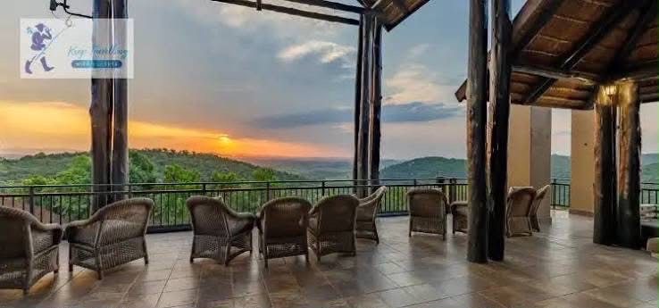
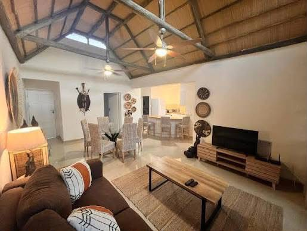

Our Services
Thoughtful experiences and facilities designed to make your stay memorable.
Zulu Cultural Evening
Boma dinner, Zulu dance performance and traditional storytelling.
R 850 per personSunset Experience

Sunset viewing, refreshments and photography opportunities.
R 650 per personWeddings & Events

Weddings, meetings, parties and special events for up to 250 guests.
EnquireDining & Boma
Breakfast, lunch, dinner and traditional Boma dining with locally inspired flavours.
View DiningPrivate Pool Villa

Enjoy privacy and relaxation in our private pool villa.
From R 4,800 per nightCultural Experiences
Explore Zulu heritage through cultural activities, stories, performances and local experiences.
Ready to experience Zulu Sunset Lodge?
Book NowFrequently Asked Questions
Quick answers to help you plan your stay.
How do I request a booking?
Visit the Booking page, choose your accommodation and enter your preferred dates and guest details. The current site is a demonstration and does not confirm a real reservation.
Can I enquire about events or special requests?
Yes. Use the Enquiry page and choose the relevant enquiry type so your message can be prepared for the lodge team.
How can I contact the lodge?
Use the Contact page to view contact information, the general-area map and a message form.